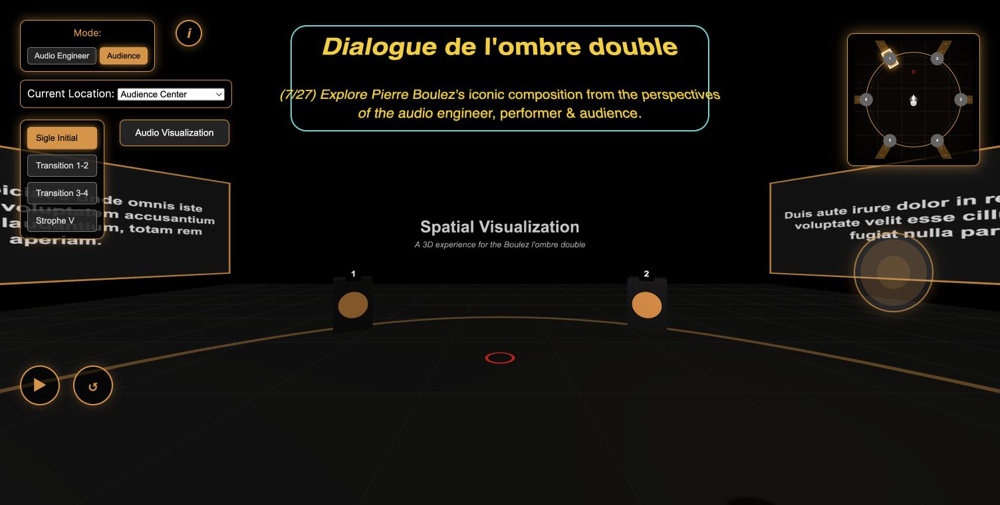
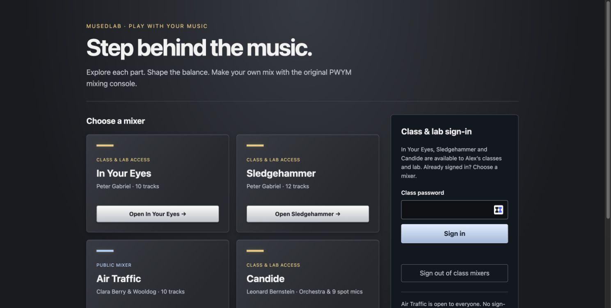

Play: Virtual Piano Duet v2
Improvise with recorded pianist Steve Wogaman of the Chamber Music Society of Detroit and see your melodies take shape in a Melody Notebook. V2 automatically captures your played notes, timing and chords as piano rolls. Name and save phrases in your browser, replay them alone or with the duet, and export or import compatible melody JSON files. These are note recordings, not microphone audio; saved phrases stay in this browser rather than syncing to an account.
Play Virtual Piano Duet v2
Listen: Inside the Aeolus String Quartet
Step inside the ensemble through immersive recordings developed with the Aeolus String Quartet, Steve Wogaman and the Chamber Music Society of Detroit. Spatial recording and mixing offer new ways to experience chamber music through headphones and web platforms.
Watch the Aeolus playlist
Explore: Boulez’s Dialogue de l’ombre double
MusEDLab and IRCAM developed an interactive exploration of Boulez’s spatial electroacoustic work, combining recordings, score materials and spatial audio visualization. Alex Zhang, James Chang and Zehao Wang collaborated on the platform.
Play the Boulez spatial audio experience
Explore: Chinese traditional music
In collaboration with Yiting Liu, MusEDLab explores traditional instrumental performances through immersive multichannel recording, spatial listening and interactive media. The project connects musical performance and cultural heritage with creative learning and research.
Spatial Music Lab opens with Chinese Instrumental, featuring music by Justin Scholar 玉刻. Move individual sounds to explore the spatial mix.
Open Spatial Music Lab
Immersive recording & mixing interfaces
In Your Eyes
Explore Peter Gabriel’s recording through the restored PWYM mixing console.
Class and lab sign-in required. Music rights remain with the artists and publishers.
Open class & lab sign-in
Sledgehammer
Explore the balance of Peter Gabriel’s multitrack recording with the restored PWYM mixing console.
Class and lab sign-in required. Music rights remain with the artists and publishers.
Open class & lab sign-inCandide
Explore Leonard Bernstein’s orchestral music by moving across the stage to hear nearby spot microphones.
Class and lab sign-in required. Music rights remain with the artists and publishers.
Open class & lab sign-inAir Traffic
Explore Clara Berry & Wooldog’s recording with the public PWYM mixing console.
Public access; no sign-in required. Music rights remain with the artists and publishers.
Open Air Traffic